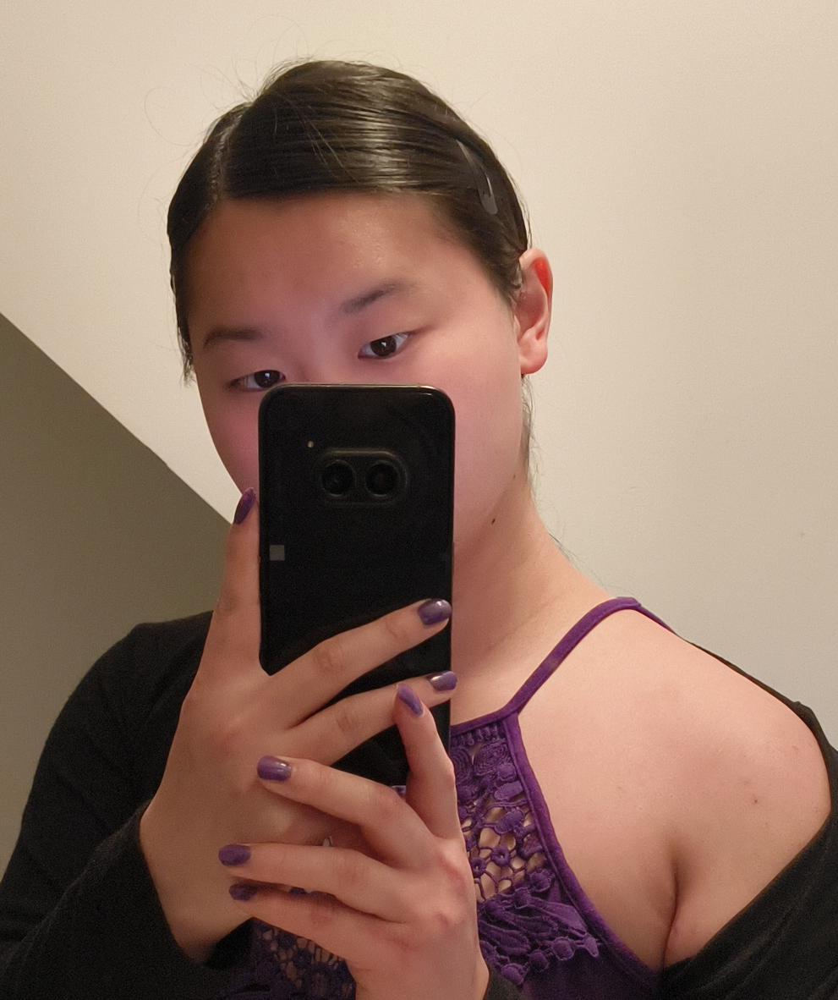
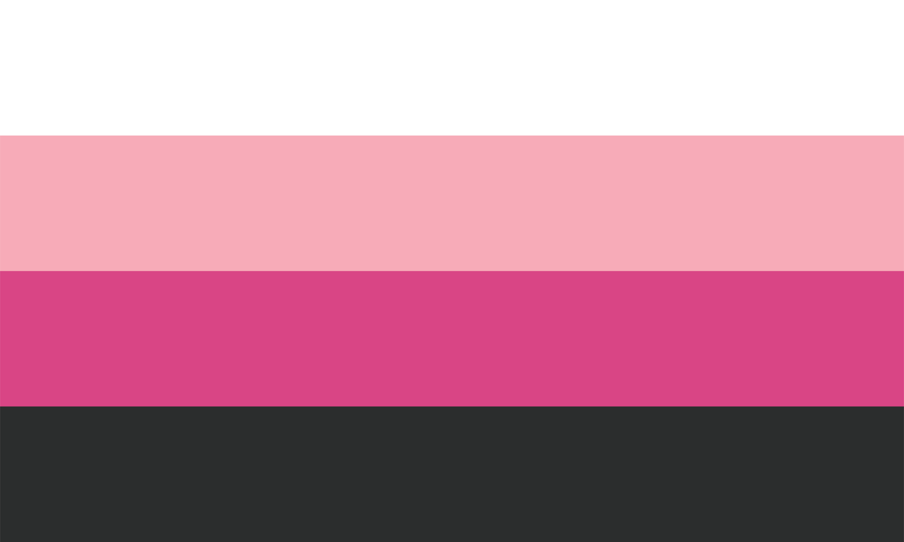
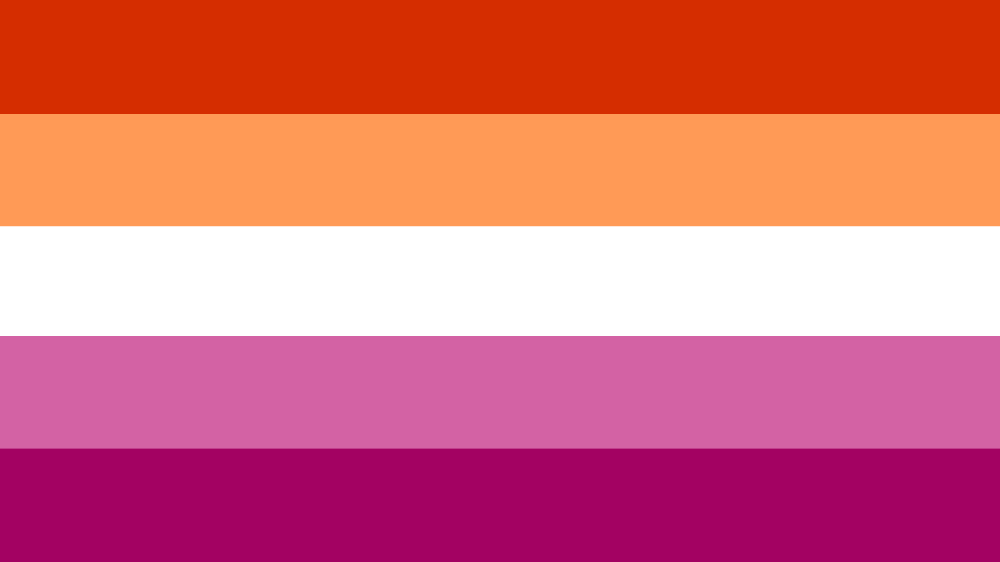
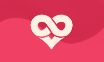
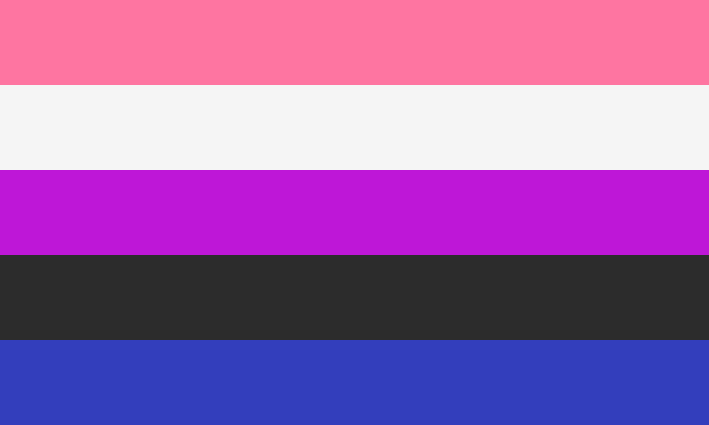
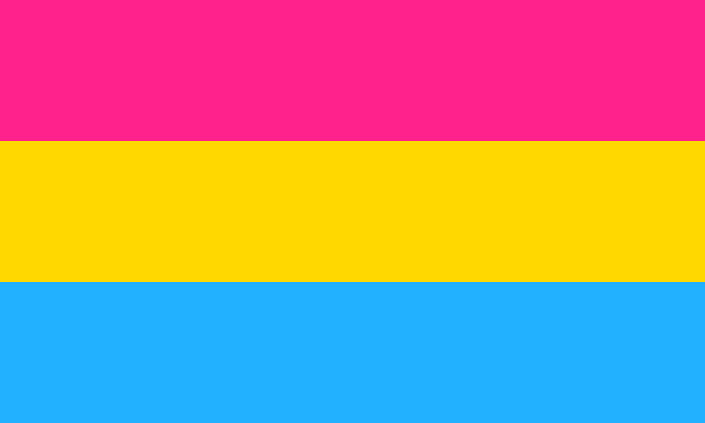
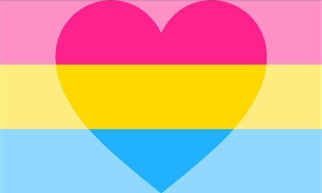

Scroll down for more
Hey there! You can call me Violet, although I like to go by many names depending on my mood. I'm a computer programmer, music listener, video game player, and purple enjoyer. 💜
| Violet | My "core" name; you can always call me this |
|---|---|
| Aurora | Energized or particularly happy |
| Ava | Playful or happy |
| Lucy | Particularly fem |
| Ysa | Formal or fancy |
| Nova | Masc/enby |
| Winter | Depressed or physically tired |

TransfeminineTransfeminine: being a woman while not having been assigned female at birth
Flag credit: u/throwawayacountyay

LesbianLesbian: being a woman attracted to other women
Flag credit: purrfectcath

PolyamorousPolyamorous: desiring multiple relationships at the same time
Flag credit: u/tadfox

GenderfluidGenderfluid: having a gender identity which changes over time
Flag credit: thoughtstoberememberedon

PansexualPansexual: being sexually attracted to all genders
Flag credit: shrikeabyssals

PanromanticPanromantic: being romantically attracted to all genders
Flag credit: Pride-Flags
More to come soon...